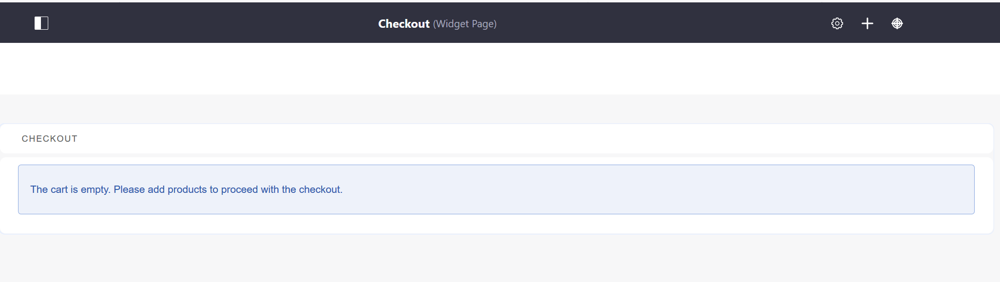
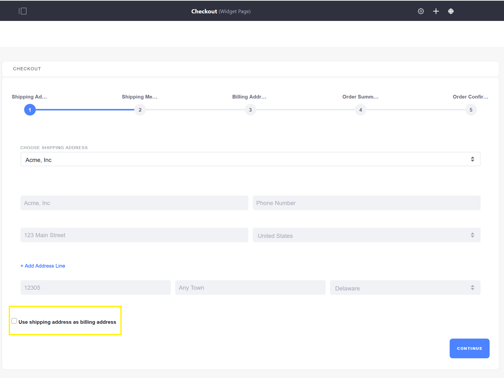
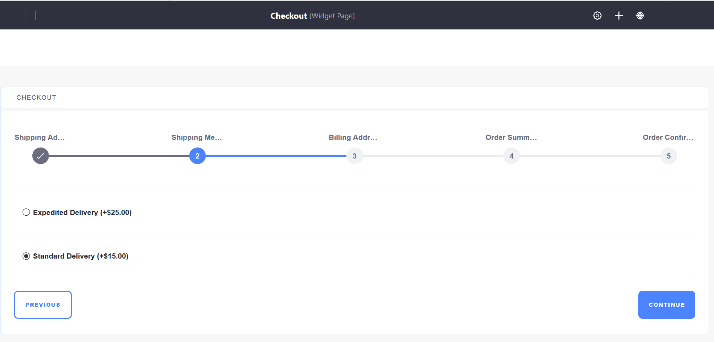
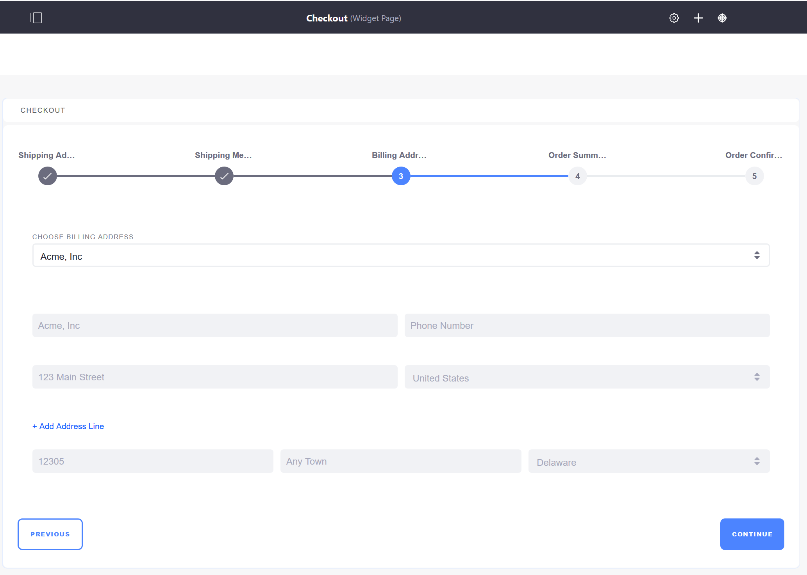
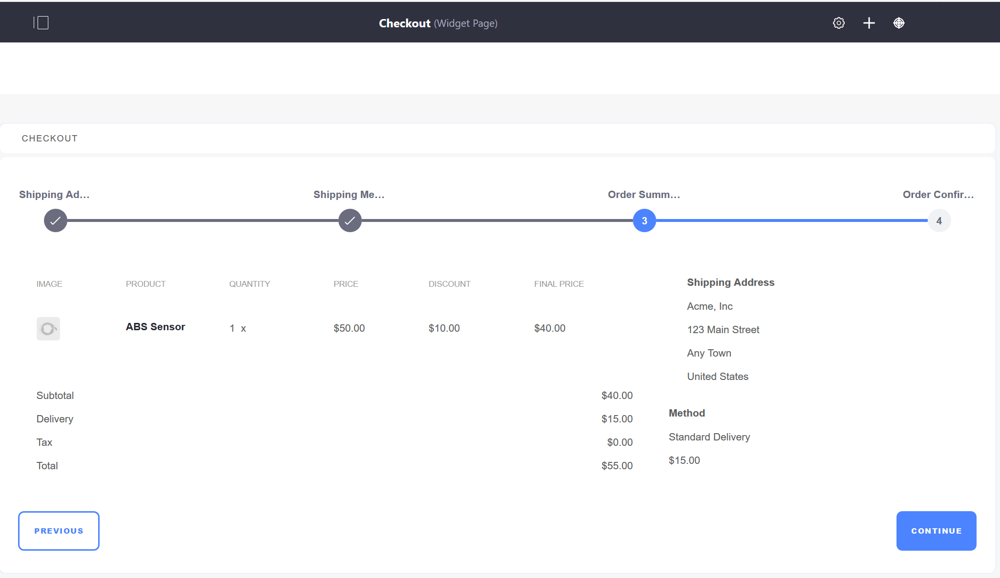
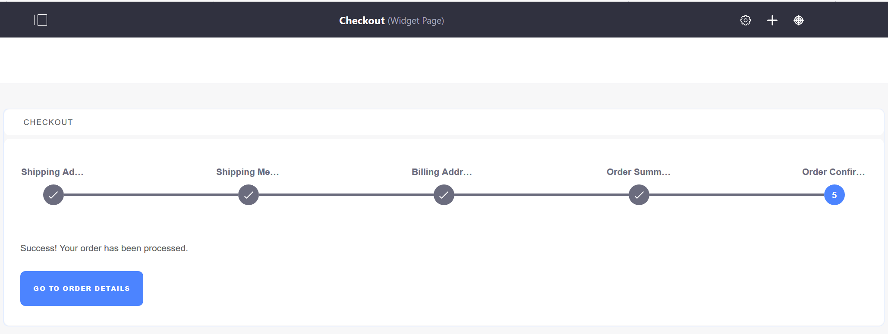

Checkout¶
The Checkout page is a required page that contains the Checkout widget. This widget is populated once a buyer clicks Checkout to submit an order. Custom checkout steps can also be implemented using extension points. To learn more see Implementing a Custom Checkout Step.

During the checkout process, there are several pages to enter the buyer』s shipping and billing addresses and choose a shipment method. The last two pages are the Order Summary and Order Confirmation.
Entering a Shipping Address¶

Note that if the buyer checks the Use shipping address as billing address, this will skip the Billing Address page.
Selecting Shipping Method¶

Shipping methods available to a buyer are configured by changing Shipping Methods in Site Administration → Commerce → Settings -> Shipping Methods. See Using the Flat Rate Shipping Method for more information.
Entering a Billing Address¶
As noted above, this page appears only if the buyer』s billing address is different from the shipping address.

Viewing the Order Summary¶

Confirming the Order¶

When an order is confirmed, the order is ready for processing by the seller. See Order Life Cycle for more information.